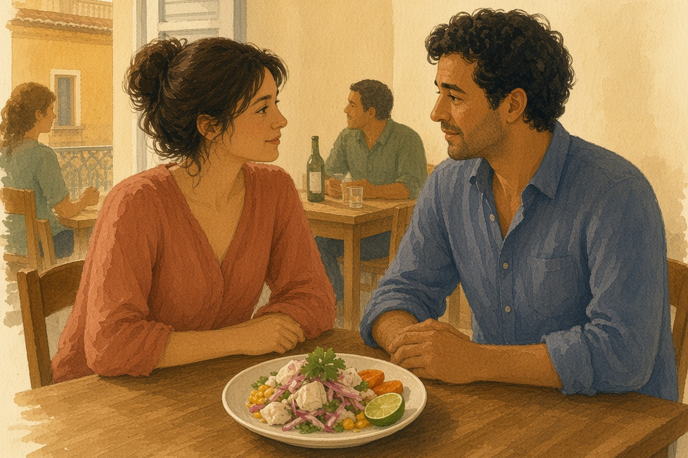

- A2
- Un plato del Pacífico
El ceviche es patrimonio
En Lima el ceviche no es solo un almuerzo: es una práctica que la UNESCO reconoció en 2023.
Included for Edison Spanish students · Book a trial class
The full reading, its translation, glossary, audio and exercises are part of the student materials.